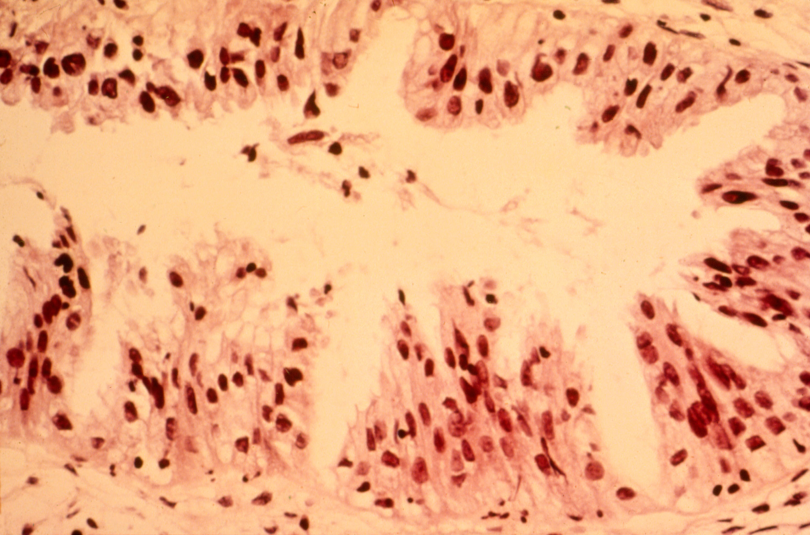

Intrauterine Devices and Cervical Cancer
Rachel Barbour
Fall 2011

Cervical cancer is the third most common form of cancer in women.
Statistics from the National Cancer Institute estimate that it affects
nearly half a million women worldwide and is fatal to over a quarter of
this figure annually. New research, however, has identified an
encouraging relationship between the prevention of cervical cancer and
an unexpected source: birth control. A recent study conducted by
researchers from the Institut Català d'Oncologia in Barcelona and
published in The Lancet Oncology has found a correlation between the
use of birth control intrauterine devices (IUDs) and a reduction in the
development of cervical cancer.
IUDs are small T-shaped devices that are
inserted into the uterus by a doctor. There are currently two types of
IUDs in use: hormonal IUDs that secrete the hormone progesterone, and
copper IUDs that cause the uterine lining to produce a fluid that is
toxic to sperm. In both cases, the device causes irritation in the
uterine lining that helps prevent an embryo from implanting.
The Lancet study reviewed data from a
collection of previous studies conducted in multiple countries to
analyze the relationship between IUDs and cervical cancer. The data
compared the low IUD use in women who had cervical cancer with the high
IUD use in women who did not. In compiling this data and fitting it to
a logistic curve, researchers found that women who used IUDs had a 44%
and 54% lower chance of developing squamous-cell carcinoma and
adenocarcinoma respectively, which are two of the most common forms of
cervical cancer. Principle researcher Dr. Xavier Castellsagué told
Reuters that the result came as a surprise since it is the first
conclusive proof of any relationship between IUDs and cervical cancer.
While IUDs may stop the virus from
triggering cancer, the method through which this prevention occurs is
still unclear. One suggestion the review put forth was that the
irritation IUDs cause in the uterine lining might spark a woman’s
immune system to fight off lingering human papillomavirus (HPV)
infections before they develop into cancer, which according to the
National Cancer Institute are the most common cause of cervical cancer.
No correlation, however, was found between the use of IUDs and the
contraction of HPV.
Because the study showed only correlation,
not causation, its implications are limited. Furthermore, IUDs bear a
stigma in the U.S. that dates back to the 1970s when the original
models carried risks such as ectopic pregnancies and inflammatory
disease. Now, despite the efficacy of modern models, only a small
percentage of women in the U.S. use them. If IUDs are ultimately proven
to be a viable form of cancer prevention, they will need to overcome
this negative association. This study opens the door to the future
possibilities of IUDs by providing new information that is valuable to
scientists as they seek to understand and develop methods of preventing
cervical cancer.